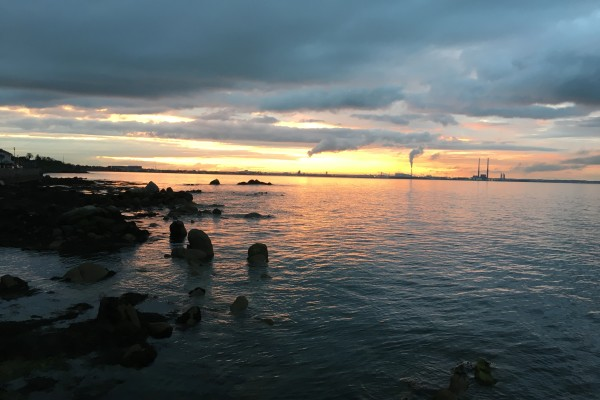

The absence of a deep emotional connection between humans and the natural world is at the root of the environmental crisis. Can you think of a place in nature that you know really well? Close your eyes for a moment and see what comes up. Can you visualise the place in exquisite detail? The sounds,…
In order for any plant to grow and flourish to its full potential, it needs the right conditions.
The soil is all important. Everything grows in the soil. If the soil is good and you have the right amount of sunshine and water everything takes care of itself. Nature follows its own course. We don’t need to interfere. The tiny acorn grows into the majestic Oak tree.
Would the same Oak tree grow in a desert? Would it flourish in a tiny plant pot? What if the soil is barren and polluted?
It is no different for human beings. In order for us to grow and flourish to our full potential, we need the right conditions. In our case, you could think of society as the soil in which we grow. What do I mean when I say “society”? I mean it in the broadest possible sense: our families, our communities, our schools, our friends, our government institutions, our laws, our offices, our work, our recreational spaces, our culture… the world in which we live.
Does our society provide the optimum conditions for human growth and development?
Is each person afforded the appropriate conditions which will allow them to flourish… to become what they were always naturally inclined to become: an artist, a farmer, a carer, an entertainer, a thinker, a writer, a scientist, a mother, a teacher, an explorer?
Is our society more akin to an industrial farm where only one or two crops are considered to be of value? Where rainforests are chopped down to make room for the profitable, consumable crops. Where any inclination towards being an artist or an explorer or a philosopher is suppressed in favour of something more practical… maybe an accountant or a tax consultant or a banker? Not that there’s anything at all wrong with those professions if that’s what you love to do. Does society make it easy for a person to discover what their talent is and does it enable them to cultivate that talent? Is that what school does or in a sense does our current education system do the exact opposite? Does it teach children to question and think for themselves or does it teach them to memorise facts and conform?
Think back to when you were very young. What did you love to do back then? What were you really interested in? Maybe it’s so long ago you find it difficult to remember. Did you have a natural inclination towards something? Were you one of the lucky ones and did you always follow this interest throughout your life or did you stop for some reason? Was it suppressed? When did it become very important to “fit in” and please other people? When did you become pragmatic? When did safety become the most important thing? When did earning lots of money, owning material things and being “successful” become the dream? What is success? Were you ever empowered to follow your real dream or did it always seem unrealistic and unfeasible to do that? Were you ever asked what it is you would really like to do with your life? Have you ever considered these questions before?